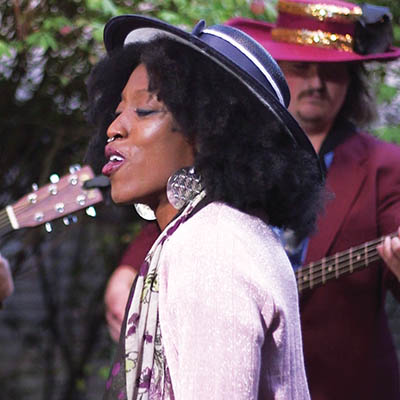

Everything about it is love
Sharing and caring with Branjae and the Filthy Animals

From left: Sam Jones, Jason Booze, Kristin Ruyle, Branjae Jackson, Taylor Graham, Nathan Wright
Melissa Lukenbaugh
Branjae and the Filthy Animals aren’t an easy band to categorize. Branjae, a wayfaring high-priestess of soul, steeped in R&B and looking over the horizon to new sources of inspiration, is joined by a band that includes members of such diverse local bands as Count Tutu, Captain Comfy, Sam & The Stylees, Ego Culture and Green Corn Rebellion, to name a few. The members’ eclectic musical backgrounds create a potent, danceable mix that joyously bounds through different feels and styles.
The band recently came by the office to bring our season of Courtyard Concerts to a spectacular and triumphant close. On the weekend after the grand finale, Branjae, the Filthy Animals and I broke out of the Courtyard and (with apologies to Beau Adams for totally biting his style) headed to Lefty’s On Greenwood for some day drinking and the most freewheelin’ Courtyard Concert Q&A we’ve done. The conversation touched upon band names tried on before settling on the Filthy Animals—including Branjae and the Boyfriends, Branjae and the Buttermilk and, one they used for just one show at the Deli in Norman, Branjae and the Horrifically Endowed. They also discussed writing songs together and what everyone was for Halloween (the interview was on Nov. 1, after all, so this was a necessary topic of discussion.)
Branjae and the Filthy Animals plan to begin recording an album in January. Catch their next Tulsa show at Fassler Hall on Dec. 11.
For now, so long from the Courtyard. We’ll let you know when the turtles come out of hibernation.
Halloween costumes:
Branjae Jackson, vocals: Zombie Storm (like Storm of the X-Men, but a zombie version).
Taylor Graham, bass: Kenny Powers.
Nathan Wright, guitar: Fela Kuti.
Sam Jones, guitar: “Bruce Wayne Forgot” (rubber Batman mask, nice clothes, no pants).
Jason Booze, drums: A luchador.
Kristin Ruyle, percussion: A cyborg.
Best way to spend a Saturday:
SJ: Jacob Fred said hiking. I’ve got to top that. Running through the forest.
TG: Grilling out, starting to drink a little too early and then the night goes on and you go and see a good show or play a show. That’s a solid Saturday.
BJ: I want to be outside on a Saturday. To be one with the universe. It’d be an amazing Saturday to be flowing in the songwriting realm. Songwriting is about moments. So I’d like to spend a nice Saturday creating moments. A free-for-all sort of day.
Currently listening to:
SJ: We’re all listening to Hiatus Kaiyote. I’m listening to Vulfpeck. A lot of Tool.
BJ: I’m spinning jazz records nonstop. Coltrane. Nancy Wilson. I’m in a jazz tornado. It’s all I want to listen to. I’m swept up in it. I’m like Dorothy. I like the old stuff. It reminds me of soul music, which is what I was brought up on. I’ve got to go backwards before I go forwards.
TG: A lot of Brothers Johnson. Most underrated funk band ever, in my opinion.
KR: Lots of Jurassic 5, like constantly lately. And Dr. John, a lot as well.
NW: This whole summer I was listening to a lot of Afro-Cuban stuff, Afrobeat, a lot of Latin stuff. But now that it’s getting a little bit cooler I’m listening to more Bjork again and Grizzly Bear, stuff like that.
JB: I’ve been listening to a lot of Snarky Puppy. I’ve been delving into it more and just having my brain hurt.
Favorite local hangout:
BJ: I’m really enjoying Mix Co. The venue is in the artist’s hands, however they want to use it. They’ve had some really cool soul music in there, Mike Cameron’s shows, some jazz and some funk and some Tulsa Sound. And I like the lighting. Everyone looks hot.
TG: It was cool seeing the [Swunky Face] Big Band show there. It felt like you were in the ’40s or the ’20s or whatever era. You feel fancy.
Most memorable Filthy Animals show:
NW: Opening for Jacob Fred Jazz Odyssey and Thundercat [at Higher Plains Music Festival.]
JB: It was an early show and we even started playing like, 10 minutes early, and the audience was already awesome.
TG: Especially on a Tuesday night for Tulsa to show up like that. I met people in the crowd that had come from Fayetteville and other cities for it.
BJ: Thundercat was so amazing. Everyone was so connected.
SJ: There were so many great musicians at that show. I remember being captivated by Thundercat, and then looking to my left and right and seeing some of the best musicians in Tulsa doing the same thing.
Best show ever in Tulsa:
JB: For my personal experience, it was five or six years ago when MUTEMATH came through Cain’s Ballroom. At the time they were my jam, and I love their drummer’s approach to that particular style of
music.
NW: When I was a freshman in college and saw [JFJO’s] Race Riot Suite. It was cool seeing people around me doing big things. It was inspiring.
TG: George Clinton at the Flytrap. That show changed my life forever.
BJ: I was at that show. Wow! We were at that show together.
SJ: I was too. We were all at that George Clinton show together.
TG: And we didn’t even know it.
BJ: We weren’t filthy yet.
KR: Beck at the Cain’s was amazing. With the puppets.
SJ: Earth, Wind and Fire at the Brady Theater.
TG: I was there.
SJ: You were there? Shut the fuck up.
Three desert island albums:
TG: D’Angelo – Voodoo, Michael Jackson, probably Thriller and I've got to get a Stevie Wonder. Songs in the Key of Life. That's my three.
NW: Dysnomia by Dawn of Midi, so that I could study something interesting for a long time, Vespertine by Bjork for my spiritual health, and Hiatus Kaiyote – Choose Your Weapon.
SJ: Harry Belafonte’s Greatest Hits, Little Dragon Tales. Not Little Dragon. Little Dragon Tales: Chinese Children’s Songs. Look it up. And Rhythm of the Saints by Paul Simon.
JB: I'm also going with Hiatus Kaiyote's Choose Your Weapon, The Police, I'll go with Synchronicity, and then Tito Puente – Mambo Birdland.
BJ: I'm going to go with Michael Jackson – Off the Wall. The reason I entertain, the reason I do any of this is because he's the man. Brandy Norwood – Full Moon. As a singer, that's my girl. I grew up with her. Chet Baker – Chet Baker Sings. I adore that album. I just discovered him and he's changing me.
KR: Elima Kinkungu. He’s this mind-blowing Congolese artist. Any one of his albums. I loves me some Funkadelic – Maggotbrain. Taj Mahal – Mo’ Roots. He makes me feel at home.
On collaborative songwriting:
NW: We write individually a kind of a framework. We have a back catalog of tons of unfinished songs. We throw a bunch of stuff into the hat and Branjae will pick one that really inspires her and she’ll get at it. And then we’ll start jamming it and fleshing out the parts.
BJ: Other times I’ll write lyrics and a melody and bring it to the Filthy Animal that I feel will have the right feel for the song. Sam writes more Latin and rock. Taylor’s gonna funk shit up. Nathan is kind of all over the place. He’s got a classical background. We’ve come together with lots of different styles, and it’s interesting to see how it develops. As an artist, I’ve done a certain style up to this point, and the Filthy Animals is a transition into something different. I’m loving it.
KR: I love this band so much, because you take the music seriously, but you don’t take yourselves seriously. In some bands people will say, “This is how this has to be,” but you guys are like, “No, I’m not attached to that, you have another idea? OK, cool.”
TG: A rule that I try to bring is, don’t ever write off an idea. Even if you hate it, try it with an open mind. Give it an honest chance.
NW: We’ve done a really good job of not dictating what other people’s parts are. So we’ve been able to maintain a whole lot of creative freedom as individuals.
SJ: No one of us knows the exact formula for a great song, but we can cumulatively come to something awesome.
TG: That’s why I prefer to write with people. Music is all about people communicating. It’s like you’re telling a story, and if you’re the only perspective that story is being told from, it’s one-sided. You get more people in, it’s more rounded, more diverse, it’s got different phases in it.

On Tulsa’s cultural climate:
NW: The conditions are right right now. There are lots of places opening up that want music. There are lots of people that are graduating high school and college that have really cool bands. Everybody has access to good music. I know some younger bands that are kicking some major ass right now. Zach Short’s kicking ass. The dudes from Ectoplasmic Sex Weapon. Maybe they’ll have a different band name some day, but they’re really, really stellar. These kids are kicking butt, and it’s pushing the older generations to push a little harder.
SJ: It’s like a self-fulfilling establishment, where it can only get better and better. When I was 15, playing coffee shops and wherever, we were shitty, but we made other people think, “Oh, these kids are doing this.” And now I’m at the same place where I’m thinking, “These kids got something.” It’s an evolutionary progression.
NW: The history of music is very segregated, culturally. It used to be that what you listened to was your culture. A Spotify subscription would blow anybody’s mind 15 years ago. There’s a lot more openness. A lot less tribal warfare between genres and bands. Any week I might see a classical show and then hit up the Cypher and see some rappers. I can dip my hands in a lot of different genres and it’s cool because no one is giving me shit about it.
BJ: I love that people are crossing genres. We’ve all been circulating and working in different ways and now it’s sort of becoming a togetherness that will, in turn, make the scene larger. I like when I go to a hip hop show and see my boy Jordan Hehl, who plays jazz, up there just grooving. We’re all here.
TG: That’s the beautiful thing to me. That community. The artists. They’re making it grow. It’s amazing. You can go out on a Monday, and there are people out, wanting to see music. Not just there to have a drink or watch a game. They’re there to see music. It’s all growing, and it’s all growing together.
Music is:
KR: It’s the ultimate human connection, within the band and between the band and the audience.
NW: It’s a very specific way of communicating feelings and pulling people closer together. I love music because of how interesting it is intellectually. How it’s developed through human culture. How it doesn’t have a set of rules, just a set of tendencies that are attractive to humans aesthetically for different reasons. And then I like it as a lifestyle. It’s been the best way that I’ve found to live. It amplifies everything about my life.
JB: It’s art for your ears. It can make me feel such a broad range of emotions, and also depending on whatever I’m feeling, it can elicit something even deeper.
NW: I heard a saying: “Art is to decorate space, and music is to decorate time.”
TG: It’s everything. It’s every emotion you’ll feel. You can get lost in that emotion or you can bounce yourself out of it. It can change your whole life, just like that.
SJ: It can be emotion, it can be communication, it can be expression. It’s very interpretive. It’s always evolving. It’s so basic and yet it’s so unexplainable.
BJ: It can make a person really feel that they are in the present moment. When people go to shows and go crazy, they’re not losing their shit because they’re questioning things. They’re living in the now and in the moment and it feels good. It’s what we all need. The energy coming from the band to the crowd and back keeps the energy moving and the love wheel turning.
It’s all love. Every way you look at it, it’s love. It’s a piece of the soul. It’s a gift when people share it.
And music is challenging. I’m in kind of a weird place now, artistically. I’m growing and developing and changing, and I have to accept the changes and love myself enough to say it’s OK. To say it’s OK to change, to not worry about the outcome of the change. Music helps me discover who I am.
It’s an entity that continues to expand as long as we allow it to expand. As long as there are creatives out here who are thinking outside of the box and thinking of ways to express themselves, we can find ways to create music that other people relate to or are holding onto or waiting for, though they didn’t even know it’s what they needed. That’s why I love it, and that’s why I listen to it and that’s why I make it.
.jpg)
.jpg)